The Ecosystem Unveiled
The Friction of Foresight

"Welcome to the architectural overview. To truly understand enterprise AI, you cannot look at a single company in isolation. I am projecting the entire Smart Mobility Ecosystem onto your screen. Watch how raw materials extracted in the desert become battery packs on the factory line, which in turn power autonomous delivery fleets in the city. When one link in this chain suffers from data corruption or hardware blind spots, the entire financial structure collapses."
The Smart Mobility Ecosystem: A Boardroom Trilogy
To demonstrate that AI enablement is an ecosystemic challenge, not an isolated IT problem, we focus on the interconnected Smart Mobility Ecosystem. The fate of one company's AI project directly impacts the next.
Upstream: Terra-Resource (Mining & Raw Materials)
Terra-Resource extracts the raw materials critical for electric vehicle batteries. They are drowning in legacy data from decades of operations and battling escalating public scrutiny over sustainability. Their core challenge is extracting predictive intelligence from historical chaos.
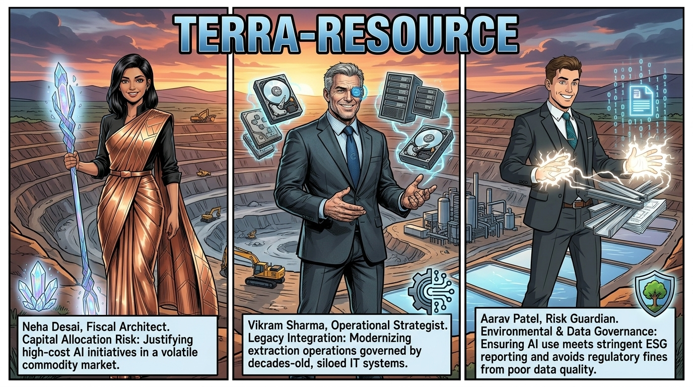
Board Personas & Fiduciary Friction:
- Neha Desai (Fiscal Architect) — Capital Allocation Risk: Her primary duty is strategic capital allocation, personifying the fight for every dollar of investment. Her core challenge is justifying high-cost AI initiatives in a volatile commodity market while ensuring the long-term survival of the multi-billion dollar entity.
- Vikram Sharma (Operational Strategist) — Legacy Integration: Modernizes extraction operations governed by decades-old, siloed IT systems. He faces the operational nightmare of being drowning in legacy data and bridges the gap between historical field machines and predictive models.
- Aarav Patel (Risk Guardian) — Environmental & Data Governance: Manages systematic risk and regulatory oversight. His core challenge is ensuring AI use meets stringent ESG (Environmental, Social, and Governance) reporting standards and avoids regulatory fines from poor data quality.
Midstream: Volt-Tech Manufacturing (The OEM)
Volt-Tech turns Terra-Resource's raw materials into finished battery packs and automated components. They face the "implementation gap": the chasm between a successful AI proof-of-concept and its full-scale deployment across a legacy manufacturing footprint.
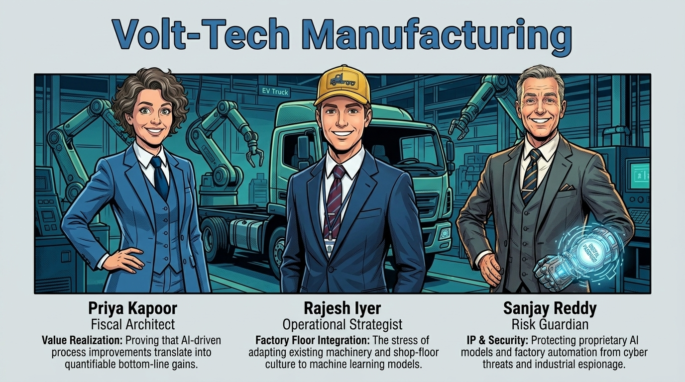
Board Personas & Fiduciary Friction:
- Priya Kapoor (Fiscal Architect) — Value Realization: Responsible for proving that AI-driven process improvements translate into quantifiable bottom-line gains and managing capital expenditure efficiency across global production lines.
- Rajesh Iyer (Operational Strategist) — Factory Floor Integration: Manages the stress of adapting existing machinery and shop-floor culture to machine learning models, overcoming the friction of legacy robotics and worker resistance.
- Sanjay Reddy (Risk Guardian) — IP & Security: Focuses on systematic risk management, specifically protecting proprietary battery AI models and factory automation from cyber threats, model poisoning, and industrial espionage.
Downstream: Orbit-Logistics (The Fleet Operator)
Orbit-Logistics operates the autonomous delivery vehicles and delivers final products to consumers. They are on the front lines of the "Productivity Paradox," where massive investments in technology have not yet translated into visible, system-wide productivity gains, leading to internal resistance and mounting losses.
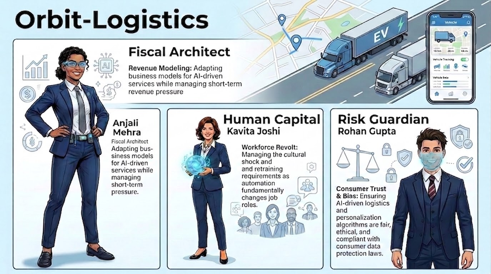
Board Personas & Fiduciary Friction:
- Anjali Mehera (Fiscal Architect) — Revenue Modeling: Adapts corporate financial structures for AI-driven services while managing intense quarterly revenue pressure and rising capital expenditure.
- Kavita Joshi (Human Capital / Operations) — Workforce Revolt: Manages the cultural shock, retraining requirements, and fear of displacement as automation fundamentally alters fleet operations and dispatch roles.
- Rohan Gupta (Risk Guardian) — Consumer Trust & Bias: Ensures AI-driven routing, speed governors, and delivery algorithms are fair, ethical, and fully compliant with consumer data protection and safety laws.
The Strict Fiduciary Duty of AI
By focusing on these specific board personas—the Fiscal Architect, the Operational Strategist, and the Risk Guardian—the reader understands a fundamental truth: AI is not merely an IT project; it is a strict fiduciary responsibility[2].
It requires strategic capital allocation (Neha, Priya, Anjali), demands systematic risk management (Aarav, Sanjay, Rohan), and forces difficult, often painful, cultural oversight (Vikram, Rajesh, Kavita). The success or failure of AI deployment will determine the long-term survival and ethical standing of these multi-billion dollar entities.
Stakeholder Power / Interest Engagement Matrix (TOGAF Preliminary Phase)[1]
To align governance across disparate corporate cultures and regulatory regimes, the preliminary architecture capability maps all primary stakeholders onto a formal Power / Interest Matrix with designated engagement strategies:
| Stakeholder | Enterprise Role | Power | Interest | Engagement Strategy | Primary Architecture Viewpoint |
|---|---|---|---|---|---|
| Anjali Mehra | CFO (Orbit) / Fiscal Architect | High | High | Manage Closely (Co-Design Gate Criteria) | ROI, Unit Economics & Capital Allocation View |
| Kavita Joshi | CPO (Orbit) / Human Capital Lead | High | High | Manage Closely (Workforce Transition) | Human-in-the-Loop (HITL) & Agency View |
| Rohan Gupta | CRO (Orbit) / Risk Guardian | High | High | Manage Closely (Veto Authority on Safety/Legal) | Bow-Tie Risk, Safety & Regulatory Audit View |
| Narayan Debnath | Chief EA / Joint EAB Chair | High | High | Co-Create (Chair Transformation Lifecycle) | Architecture Vision, Principles & Governance View |
| Priya Kapoor & Rajesh Iyer | CFO & COO (Volt-Tech OEM) | Medium | High | Keep Satisfied (PPAP & Warranty Contracts) | Interface Contracts (IDL) & Manufacturing View |
| Neha Desai & Vikram Sharma | CFO & CTO (Terra-Resource) | Medium | Medium | Keep Satisfied (DPP & ESG Standards) | Information Architecture & Provenance View |
| Depot & Fleet Dispatch Managers | Frontline Field Operations | Low | High | Keep Informed (Continuous Training & Feedback) | Operational Telemetry & Dispatch Console View |
| EU Regulators & Safety Auditors | EU AI Act & Battery Directive Authorities | High | Low | Monitor & Comply (Automated Compliance Exports) | Digital Product Passport & Audit Log View |
The Storyline: Emergency Reckoning in the Global Command Center
Orbit Logistics is the lead enterprise driving this entire ecosystem transformation. As the downstream fleet operator serving millions of end consumers, Orbit's Board of Directors has made two foundational, non-negotiable Value Commitments:
🚚 Customer Value Commitment
Smooth, Safe & On-Time Delivery: Guarantee 99.8%+ SLA punctuality, zero parcel damage, radical real-time shipment transparency, and deterministic fail-safe road safety for autonomous delivery fleets on public streets.
🏛️ Board & Fiduciary Value Commitment
Solvency, Profitability & Risk Discipline: Immediately halt the crippling $50M quarterly EBITDA loss bleed, enforce strictly verified Risk-Adjusted Unit Economics (margin per delivery mile), and eliminate all unbudgeted tech liabilities.
Yet on the operational frontlines, Orbit Logistics is failing to meet both commitments. Every upstream flaw in the supply chain and every internal system blindspot directly manifests as stranded vehicles, late deliveries, customer outrage, and escalating financial hemorrhage.

"Orbit Logistics launched this transformation to lead the future of autonomous smart delivery. But the telemetry tells an undeniable truth: you are running a multi-billion dollar enterprise in structural crisis. Your board expects profitability, and your customers expect on-time delivery. Let us hear from Orbit's leadership directly on why this promise is breaking down on the physical asphalt."
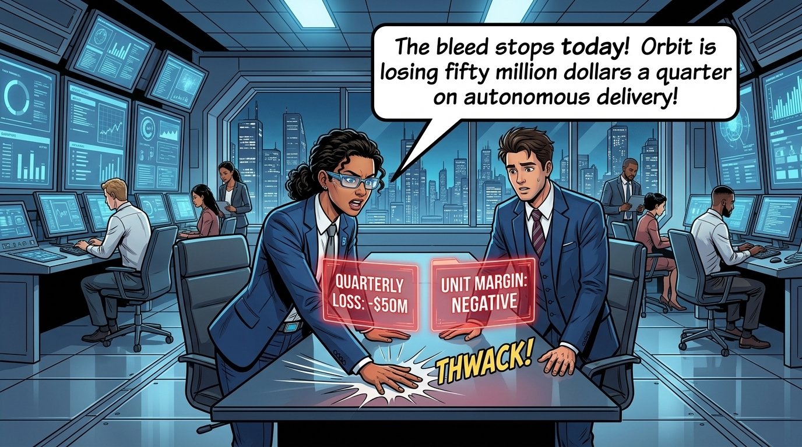
THWACK!
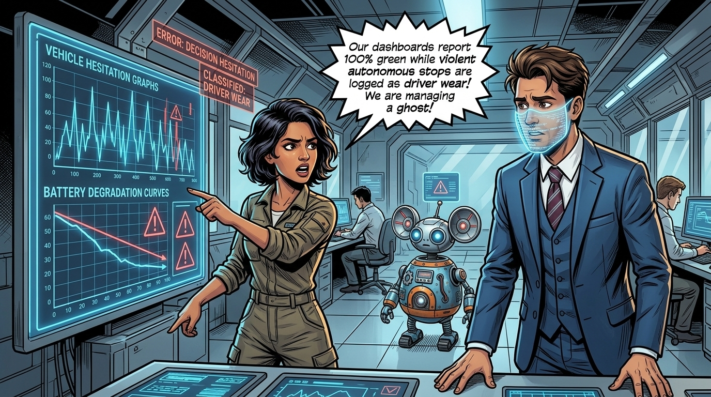
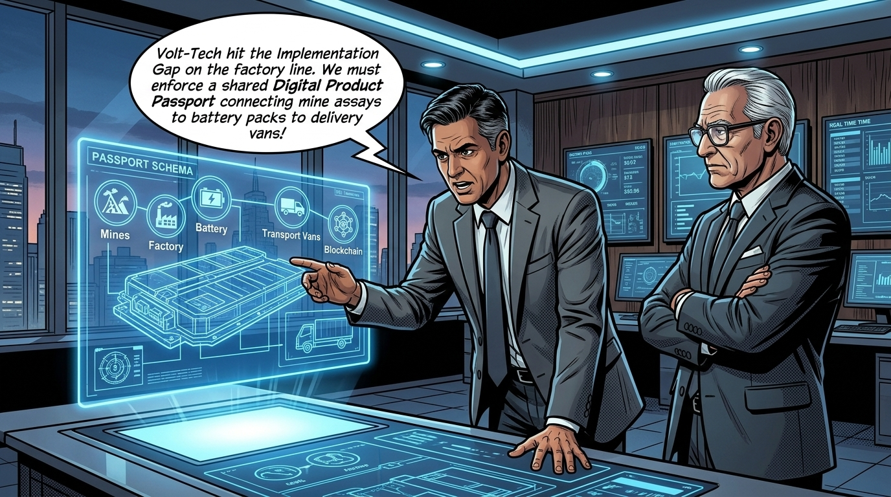

"The diagnosis is unanimous. Orbit Logistics cannot fulfill its customer commitment to smooth, on-time delivery or its board commitment to fiduciary solvency through isolated IT band-aids. We must evaluate our baseline maturity, establish target horizon capabilities, and codify Five Non-Negotiable Architecture Principles designed to resolve these exact pain areas."
Orbit Logistics: The 5 Critical Pain Areas & Fiduciary Impact
From Orbit Logistics' strategic perspective as the transformation driver, these five pain points threaten both customer trust and board solvency:
① Ghost Telemetry & Masked Loss
Autonomous hesitations and halts misclassified as human driver wear. Dashboards report green while Orbit loses $50M/quarter.
② Upstream Dark Data & Battery Halts
Mid-route vehicle breakdowns caused by untracked supplier lithium variances (Terra) and cell assembly flaws (Volt-Tech) without digital lineage.
③ Productivity Paradox & TCO Explosion
Autonomous cost-per-mile exceeds manual fleets due to unbudgeted human teleoperator rescue buffers, tows, and unverified CapEx grants.
④ Cloud-Freeze & Urban Stalls
Autonomous delivery vans freeze curbside when hitting cellular dead zones or high-latency (>500ms) cloud links, missing customer SLAs.
⑤ Silent Workforce Revolt & Bypasses
2,500 frontline dispatchers and operators fear displacement and distrust black-box AI, executing unlogged manual route overrides.
Architecture Maturity Assessment
Before executing architectural transformation, an organization must honestly evaluate its current baseline capability. The ecosystem utilizes a CMMI- and Gartner-aligned 5-level Architecture Maturity Framework tailored to enterprise AI enablement.
"Where does our ecosystem actually stand today? High-gloss corporate brochures always claim Level 5 maturity, but the telemetry paints a vastly different picture. I am projecting the Architecture Maturity Assessment across five critical capability dimensions."
"This is the diagnostic baseline where our story begins: each company is trapped in the dangerous chasm between Level 1 ad-hoc chaos and Level 2 isolated pilots. As an Enterprise Architect, it is my job to cut through the noise and show you how these scores are calculated."
1. The 5 Architecture Maturity Levels
Each capability dimension is evaluated as a simple whole number from 1 to 5, representing an organization's maturity stage:
- ✦ Operations run in silos on manual spreadsheets.
- ✦ AI initiatives are isolated "shadow IT" experiments with zero architectural governance or standardized data pipelines.
- ✦ Successful proofs-of-concept (PoCs) in sanitized sandbox environments that fail or stall when deployed on physical operations.
- ✦ High human intervention costs, masked operational errors, and rising CapEx with unverified ROI.
- ✦ Codified Architecture Principles and active Enterprise Architecture Board (EAB) stage-gates.
- ✦ Canonical data schemas and documented API contracts across all business units.
- ✦ Full real-time telemetry and automated compliance audit harnesses (EU AI Act).
- ✦ Verified Risk-Adjusted Unit Economics and end-to-end cryptographic supply-chain data lineage (Digital Product Passports).
- ✦ Closed-loop cross-enterprise adaptability across upstream extraction, midstream assembly, and downstream operations.
- ✦ Systems dynamically self-tune to real-time market demand and telemetry feedback.
2. The 5 Core Capability Dimensions
To evaluate an enterprise, architects assign a whole-number rating (1 to 5) across five core capability dimensions:
- ⚑ Data Storage & Accessibility: Evaluates lakehouse unification, elimination of manual spreadsheet silos, and real-time SCADA accessibility.
- ⚑ Pipeline Automation & Streaming: Evaluates automated, continuous high-throughput ingestion of time-series sensor telemetry.
- ⚑ Canonical Data Schemas: Evaluates standardized cross-enterprise data contracts, event structures, and API definitions.
- ⚑ Supply-Chain Digital Provenance: Evaluates immutable cryptographic lineage, SHA-256 batch certificates, and Digital Product Passports.
- ✦ Addressed in: Phase C (Data Architecture — Chapter 5)
- ⚑ Model Transparency & Explainability: Evaluates feature attribution scoring, confidence metrics, and explainable AI outputs.
- ⚑ Anti-Obfuscation & Error Logging: Evaluates raw ground-truth root-cause classification and elimination of generic proxy labels.
- ⚑ EAB Stage-Gate Enforcement: Evaluates adherence to formal architectural review gates and binding veto checkpoints.
- ⚑ Regulatory & Standards Compliance: Evaluates automated audit trails for EU AI Act Article 12 and global ESG reporting.
- ✦ Addressed in: Phase G (Implementation Governance — Chapter 9)
- ⚑ Deterministic Edge Inference Latency: Evaluates sub-15ms / sub-50ms model execution under dynamic physical operating conditions.
- ⚑ Network Partition & Offline Resilience: Evaluates local circular buffer serialization and fail-safe operation during cloud disconnects.
- ⚑ Tiered Telemetry Ingestion: Evaluates bandwidth-optimized streaming, event burst uploads, and depot bulk offload topologies.
- ⚑ Decentralized MLOps & OTA Sync: Evaluates containerized model distribution, over-the-air firmware updates, and instant rollback.
- ✦ Addressed in: Phase D (Technology Architecture — Chapter 6)
- ⚑ Total Cost of Ownership (TCO) Accounting: Evaluates full lifecycle CapEx depreciation, edge compute wear, and software licensing.
- ⚑ Risk-Adjusted Unit Economics: Evaluates real-time, per-route/per-unit profitability modeling integrated with corporate ledgers.
- ⚑ Human Rescue Buffer Overhead: Evaluates remote teleoperator intervention minutes, tow fees, and exception recovery costs.
- ⚑ Stage-Gate Capital Controls: Evaluates milestone-gated funding releases tied strictly to verified unit-cost reductions.
- ✦ Addressed in: Phase B & E (Business & Solution Architecture — Chapters 4, 7 & 8)
- ⚑ Human-in-the-Loop (HITL) Triage: Evaluates structured escalation workflows routing low-confidence decisions to domain experts.
- ⚑ Operator Upskilling & Certification: Evaluates formal training tracks transitioning frontline workers to certified AI operators.
- ⚑ Frontline Trust & Co-Design: Evaluates workforce buy-in, psychological safety, and elimination of manual system bypasses.
- ⚑ Organizational Change Escrow: Evaluates dedicated change management funding, wage protections, and transition governance.
- ✦ Addressed in: Phase B (Organizational Change Management — Chapter 10)
3. Scoring Formula & Step-by-Step Calculation
The Composite Maturity Score (CMS) is simply the arithmetic average of the five whole-number dimension scores based on CMMI maturity scales[5] and consortium calibration models[6]:
Where each dimension Dᵢ is scored as a whole number from 1 to 5.
Step-by-Step Calculation for the Three Enterprises:
-
Terra-Resource (Upstream Mining):
CMS = [1 (Data) + 2 (Gov) + 2 (Edge) + 2 (Econ) + 2 (Workforce)] / 5 = 9 / 5 = 1.8 → Baseline Status: Level 1.8 (Emerging / Siloed) -
Volt-Tech Manufacturing (Midstream OEM):
CMS = [2 (Data) + 2 (Gov) + 3 (Edge) + 2 (Econ) + 2 (Workforce)] / 5 = 11 / 5 = 2.2 → Baseline Status: Level 2.2 (Pilot-Bound) -
Orbit-Logistics (Downstream Fleet):
CMS = [2 (Data) + 2 (Gov) + 3 (Edge) + 1 (Econ) + 2 (Workforce)] / 5 = 10 / 5 = 2.0 → Baseline Status: Level 2.0 (Paradox-Bound) -
Ecosystem Baseline Average:
Ecosystem CMS = (1.8 + 2.2 + 2.0) / 3 = 6.0 / 3 = 2.0 / 5.0 → Target State Horizon: Level 4.2+ (Quantitatively Governed & Adaptive)
4. Ecosystem Baseline vs. Target State Matrices
To track transformation progress across the value chain, the Enterprise Architecture Board maintains two definitive ecosystem blueprints: the Baseline State Matrix (Level 2.0) diagnosing the multi-enterprise operational friction, and the Target Architecture State Matrix (Level 4.2+) codifying the required end-state capabilities.
4.1 Upstream: Terra-Resource (Mining & Extraction) Matrices
The upstream extraction tier is evaluated across its capability pillars, current baseline diagnostic friction, and target architecture state:
Blueprint 1.7A₁: Terra-Resource — Capability Pillars (Evaluation Scope)
Blueprint 1.7A₂: Terra-Resource — Baseline State Matrix (Level 1.8)
Blueprint 1.7A₃: Terra-Resource — Target Architecture State Matrix (Level 4.0)
4.2 Midstream: Volt-Tech Manufacturing (The OEM) Matrices
The manufacturing tier converts raw minerals into mission-critical battery packs, requiring ultra-precise factory cell governance:
Blueprint 1.7B₁: Volt-Tech OEM — Capability Pillars (Evaluation Scope)
Blueprint 1.7B₂: Volt-Tech OEM — Baseline State Matrix (Level 2.2)
Blueprint 1.7B₃: Volt-Tech OEM — Target Architecture State Matrix (Level 4.2)
4.3 Downstream: Orbit-Logistics (The Fleet Operator) Matrices
The fleet tier encounters physical road conditions and driver interactions, representing the ultimate operational test of the architecture:
Blueprint 1.7C₁: Orbit-Logistics — Capability Pillars (Evaluation Scope)
Blueprint 1.7C₂: Orbit-Logistics — Baseline State Matrix (Level 2.0)
Blueprint 1.7C₃: Orbit-Logistics — Target Architecture State Matrix (Level 4.4)
Capability Pillar Points & Architectural Explanations
To bridge the divide between the Level 2.0 Baseline and the Level 4.2+ Target State, architects structure transformation across five codified pillars:
Pillar 1: Data Architecture & Lineage (D₁) — Baseline: L1.7 → Target: L4.0
- ⚑ Data Storage & Ingestion: Baseline Failure: Raw mining assays and factory sensor telemetry reside in disconnected SCADA silos and manual spreadsheets. Target Architecture: Unified high-throughput streaming lakehouse (Apache Iceberg / Delta Lake) providing millisecond-synchronized ingestion across all sites.
- ⚑ Canonical Schemas: Baseline Failure: Incompatible data formats between extraction machines, factory robots, and fleet telematics. Target Architecture: Standardized cross-enterprise data contracts with protobuf-serialized event schemas.
- ⚑ Cryptographic Lineage: Baseline Failure: Inability to trace battery cell breakdown in Orbit vans back to chemical variances at Terra-Resource. Target Architecture: End-to-end Digital Product Passports with SHA-256 cryptographic batch certificates verifying raw materials to road operations.
- ✦ Fiduciary Mandate: Operationalized in Phase C (Data Architecture — Chapter 5) to guarantee complete data auditability and root-cause traceability.
Pillar 2: Algorithmic Governance & Explainability (D₂) — Baseline: L2.0 → Target: L4.0
- ⚑ Anti-Obfuscation Logging: Baseline Failure: Legacy dashboards mask emergency stops and battery voltage collapse beneath generic "driver wear and tear" or "traffic" tags. Target Architecture: Mandatory raw decision-telemetry pipelines capturing sensor confidence, hesitation loops, and 5-category deterministic failure classifications.
- ⚑ Model Registry & Explainability: Baseline Failure: Black-box models deployed without versioned prompt weights, SHAP baselines, or drift monitors. Target Architecture: Centralized model registry with SHAP feature attribution logs and dynamic confidence thresholds.
- ⚑ EAB Stage-Gates & Compliance: Baseline Failure: Ad-hoc project promotions without architecture review. Target Architecture: Binding 4-seat EAB Stage-Gate locks and automated compliance harnesses satisfying EU AI Act Article 12 automatic event logging.
- ✦ Fiduciary Mandate: Operationalized in Phase G (Implementation Governance — Chapter 9) to eliminate legal exposure and restore boardroom truth.
Pillar 3: Edge & Infrastructure Scalability (D₃) — Baseline: L2.7 → Target: L4.7
- ⚑ Deterministic Edge Latency: Baseline Failure: Operations rely on central cloud inference with >500ms latency, causing violent safe-stops on highways. Target Architecture: Sub-15ms onboard perception and sub-50ms deterministic local control loops on ruggedized edge compute.
- ⚑ Offline Partition Resilience: Baseline Failure: Network disconnects freeze mining machines and stall automated assembly cells. Target Architecture: Localized circular ring buffers supporting up to 4 hours of autonomous operation and automated sync upon reconnection.
- ⚑ Tiered Telemetry Offloading: Baseline Failure: Continuous uncompressed raw data streaming over cellular threatens multi-million dollar data budget blowouts. Target Architecture: 3-tier offload (lightweight streaming <5 KB/s, event anomaly bursts 2-5 MB, depot Wi-Fi bulk offload) slashing cellular OpEx by 94%.
- ✦ Fiduciary Mandate: Operationalized in Phase D (Technology Architecture — Chapter 6) to anchor algorithms in physical asphalt reality.
Pillar 4: Business Value & Unit Economics (D₄) — Baseline: L1.7 → Target: L4.0
- ⚑ Risk-Adjusted Unit Economics: Baseline Failure: The "Productivity Paradox" causes a $50M quarterly EBITDA loss hidden within generic OpEx line items. Target Architecture: Real-time unit margin calculation (cost-per-mile, cost-per-pack, cost-per-ton) continuously reconciled with corporate ledgers.
- ⚑ TCO Accounting & Buffer Elimination: Baseline Failure: Pilots ignore edge hardware depreciation, remote teleoperator rescue buffers, and scrap downtime. Target Architecture: Full lifecycle TCO models and automated tracking of human exception handling costs.
- ⚑ Stage-Gate Capital Release: Baseline Failure: Upfront lump-sum CapEx grants for unverified AI hype. Target Architecture: Tranche-based capital releases governed by Fiscal Architects (Neha, Priya, Anjali) released only upon measured unit savings.
- ✦ Fiduciary Mandate: Operationalized in Phase B & E (Business & Solution Architecture — Chapters 4, 7 & 8) to guarantee measurable financial ROI.
Pillar 5: Workforce Enablement & Culture (D₅) — Baseline: L2.0 → Target: L4.0
- ⚑ Human-in-the-Loop (HITL) Triage: Baseline Failure: Automated models operate without operator trust, prompting field teams to disable or ignore safety alerts. Target Architecture: Standardized HITL triage consoles routing ambiguous edge cases (<85% confidence) to experienced human operators.
- ⚑ Frontline Operator Certification: Baseline Failure: Fear of displacement sparks active resistance and union disputes across logistics depots and shop floors. Target Architecture: Dedicated $4.5M retraining escrow certifying 2,500 frontline dispatchers and workers as high-tier AI operators.
- ⚑ Frontline Co-Design & Wage Guarantees: Baseline Failure: Top-down AI mandates that clash with physical operational workflows. Target Architecture: Co-designed robotic cells with guaranteed wage floors and transparent augmented agency.
- ✦ Fiduciary Mandate: Operationalized in Phase B (Organizational Change Management — Chapter 10) to transform workforce friction into operational advantage.
Ecosystem Maturity Summary Rollup & Transformation Roadmap:
Architecture Transformation Roadmap: Uplifting the ecosystem from Level 2.0 to Level 4.2+ is systematically executed through Requirements Management & Phase A (Diagnostic Interrogation & Vision — Ch 2–3), Phase B (Business Case — Ch 4), Phase C (Data Architecture — Ch 5), Phase D (Technology Architecture — Ch 6), Phase B (Business Process Re-engineering — Ch 7), Phase G (Implementation Governance — Ch 8), Phase B (Workforce & Change Management — Ch 9), and Phase H (Architecture Change Management — Ch 10).
5. How to Evaluate Your Organization (Diagnostic Scoring Guide)
To evaluate any enterprise or business unit, enterprise architects score each dimension as a whole number (1 to 5) using the following diagnostic criteria:
Ecosystem Target Maturity (End of Phase H): Level 4.2+ (Quantitatively Governed and Ecosystem-Adaptive across all three enterprises).
Preliminary Phase — Section 1: Codified Architecture Principles
To move from abstract corporate aspirations to operational discipline, the ecosystem must codify non-negotiable architectural principles. In accordance with TOGAF® Preliminary Phase standards[1], each principle is structured around four essential pillars: Name, Statement, Rationale, and Implication.
"Before a single dollar of CapEx is allocated or a single line of neural code is deployed onto the factory floor, an enterprise must establish its non-negotiable laws of physics. In TOGAF, we call these Codified Architecture Principles."
"Watch how these five principles directly resolve the friction points tearing at our three boards. As Enterprise Architects, we use them to prevent Neha, Priya, and Anjali from funding black-box illusions; shield Aarav, Sanjay, and Rohan from catastrophic regulatory liabilities; and give Vikram, Rajesh, and Kavita the edge-level resilience needed when machine code meets the physical asphalt."
The 5 Codified Principles:
Principle 1: Fiduciary Anti-Obfuscation (The Honesty Principle)
- Statement:
- Enterprise AI and telemetry architectures must capture, log, and surface ground-truth root-cause classifications; systems must execute explicit diagnostic escalations rather than mask operational failure beneath smoothed proxy metrics, synthetic aggregates, or generic legacy labels.
- Rationale:
- Legacy systems routinely hide machine error behind human categories (such as Orbit-Logistics misclassifying violent autonomous stops as generic 'driver wear and tear'). Data obfuscation prevents diagnostic precision, directly driving $50M quarterly losses and violating the board's strict fiduciary duty of care.
- Implication:
- High-resolution decision telemetry (sensor confidence, hesitation loops, emergency overrides) is mandatory for all operational nodes. Automated error-smoothing or heuristic masking in executive dashboards is strictly prohibited.
Principle 2: End-to-End Ecosystem Provenance (The Chain-of-Custody Principle)
- Statement:
- Architecture must enforce verifiable, immutable digital traceability, cryptographic lineage, and model provenance across all supply-chain tiers—from upstream raw material extraction assays to midstream component manufacturing tolerances and downstream fleet telematics.
- Rationale:
- A battery degradation failure in an Orbit-Logistics autonomous vehicle is frequently rooted in unrecorded chemical variances at Terra-Resource or micro-weld deviations at Volt-Tech. Without cross-enterprise data lineage, blame is shifted and systemic root causes remain unsolved.
- Implication:
- All three enterprises must implement standardized canonical data contracts and a shared Digital Product Passport (Smart Battery Passport). Upstream batches must publish cryptographic metadata before downstream ingestion.
Principle 3: Fiduciary Value Realization (The Capital Discipline Principle)
- Statement:
- No AI initiative or automated capability shall progress beyond Phase A proof-of-concept without verified, audited Risk-Adjusted Unit Economics accounting for the entire total cost of ownership (CapEx, OpEx, edge compute depreciation, remote intervention buffers, and exception recovery costs).
- Rationale:
- The "Productivity Paradox" occurs when AI pilots demonstrate isolated theoretical gains in sanitized test environments, but destroy enterprise value once deployed against real-world operational friction, hidden human rescue costs, and cascading mechanical downtime.
- Implication:
- Fiscal Architects (Neha, Priya, Anjali) hold explicit veto authority at every TOGAF Stage Gate. Capital funding is released iteratively based on measured unit cost reductions rather than algorithmic benchmark scores.
Principle 4: Resilient Edge-First Autonomy (The Asphalt Principle)
- Statement:
- Operational AI systems operating at the physical edge (extraction machinery, robotic assembly cells, autonomous delivery vehicles) must maintain deterministic safety and autonomous execution capabilities during central cloud disconnects or degraded telemetry conditions.
- Rationale:
- Real-time physical operations cannot tolerate cloud latency, bandwidth throttling, or remote server outages. Over-reliance on centralized intelligence creates single points of systemic catastrophic failure on factory floors and city streets.
- Implication:
- Technology Architecture (Phase D) mandates decentralized edge inference clusters, bounded latency response loops (<50ms), localized cache partitions, and deterministic fail-safe recovery modes.
Principle 5: Augmented Agency & Human Fiduciary Primacy (The Humility Principle)
- Statement:
- AI architectures must augment human operational judgment with transparent, explainable recommendations, mandating Human-in-the-Loop (HITL) authorization for high-consequence operational, financial, safety, and ethical actions.
- Rationale:
- Unmitigated algorithmic drift, opaque black boxes, and unchecked automation alienate domain experts, trigger severe workforce revolt (as seen with Kavita Joshi), and expose the enterprise to massive regulatory penalties under global AI governance frameworks.
- Implication:
- Every production model must expose explainability metrics (feature attribution, confidence intervals) and provide seamless handoff mechanisms to human operators. Automated retraining must enforce supervisory sign-offs.
Architecture Blueprint: Orbit Value Commitments & Pain Points Resolved by Principles
This architectural mindmap traces Orbit Logistics' primary journey: how its dual Value Commitments to customers and the board directly confront its five operational Pain Areas, and how each pain area is definitively resolved by a Codified Architecture Principle.
Preliminary Phase — Section 2: Tailoring the TOGAF® ADM for the Multi-Enterprise Ecosystem
In accordance with TOGAF® Preliminary Phase directives, an architecture framework cannot be applied as a rigid, monolithic template. Because the Smart Mobility Ecosystem spans three distinct commercial entities—Upstream Mining (Terra-Resource), Midstream OEM Manufacturing (Volt-Tech), and Downstream Fleet Logistics (Orbit-Logistics)—the Enterprise Architecture capability must tailor the Architecture Development Method (ADM) to accommodate diverse domain standards while preserving end-to-end alignment.
"Enterprise Architect Decision: Ecosystem ADM Tailoring. A mining company operates on heavy industrial ISA-95 automation; an automotive OEM lives under rigorous AIAG APQP quality gates and ISO 26262 functional safety; a logistics operator runs on ITIL 4 service SLAs and real-time dispatch grids. If you force all three into a generic textbook process, the transformation breaks."
"In this Preliminary Phase, we tailor the TOGAF ADM cycle. Each phase is customized with domain-specific engineering frameworks, connected by unified EAB stage-gates and a shared Digital Product Passport."
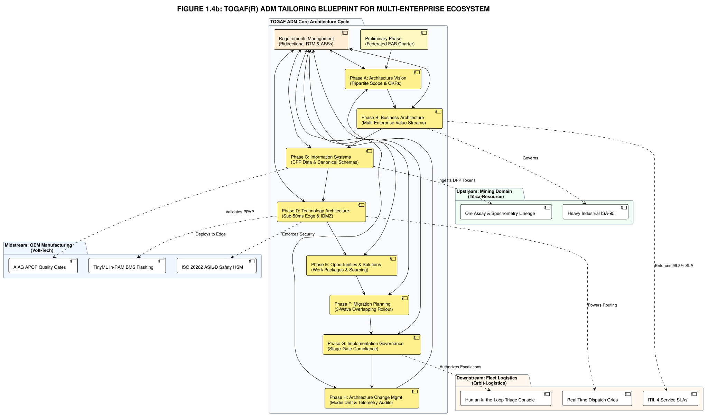
Multi-Enterprise Framework Customizations
To prevent architectural drift across corporate boundaries, the ecosystem enforces customized framework mappings for each participant:
1. Terra-Resource (Upstream Mining & Refining)
Tailored Stack: TOGAF ADM + ISA-95 (Industrial Automation) + Mining ESG
- Adapts Phase B to follow ISA-95 Level 2/3 SCADA/MES process automation.
- Adapts Phase C to ingest Laser-Induced Breakdown Spectroscopy (LIBS) purity data into the Digital Product Passport genesis block.
2. Volt-Tech Manufacturing (Midstream Automotive OEM)
Tailored Stack: TOGAF ADM + AIAG APQP + ISO 26262 ASIL-D + SAFe Agile
- Adapts Phase B to restructure engineering into cross-functional Silicon-to-Cloud Fusion Pods and mandate AIAG APQP Level 3 supplier qualification.
- Adapts Phase D & G to combine ISO 26262 ASIL-D dual-core lockstep hardware with Agile CI/CD pipelines.
3. Orbit-Logistics (Downstream Fleet Operator)
Tailored Stack: TOGAF ADM + ITIL 4 / SRE + SCOR 14.0 (Delivery Services Domain)
- SCOR Delivery Process Mapping:
- Plan: Forecasting delivery volumes, optimizing courier/AV routes, dynamic charging schedules, and planning fleet capacity.
- Source: Procuring delivery vans & smart trucks (from Volt-Tech), tracking hardware/sensors, charging energy/fuel, and managing driver/teleoperator contracts.
- Make: Sorting packages at distribution hubs, automated parcel conveyance, cross-dock loading, and balancing vehicle cargo space.
- Deliver: Last-mile autonomous transportation, dynamic road pathfinding, and physical drop-off to the end customer with cryptographic proof-of-delivery (PoD).
- Return: Managing failed deliveries, automated redelivery attempts, e-commerce reverse logistics, and upstream warranty defect traceback for hardware/battery failures.
- Enable: Running cloud/edge tracking software, managing driver/AV safety compliance (EU AI Act), analyzing telemetry streams, and calculating per-mile unit economics.
- Adapts Phase B to model depot vehicle staging, charging stall queues, and turnaround time (TAT) via SCOR 14.0.
- Adapts Phase H to route roadside halts and partial-charge field telemetry through ITIL 4 incident management and dynamic Architecture Change Requests (ACRs).
Orbit-Logistics: Key Delivery Service Metrics Under SCOR
To eliminate the $50M quarterly loss bleed and restore board fiduciary solvency, Orbit-Logistics maps its operational transformation directly into standard SCOR performance attributes[3]:
| SCOR Attribute | Delivery Service Metric | Metric Code | Baseline Failure State (2.0) | Target Architecture State (4.4) |
|---|---|---|---|---|
| Reliability (RL) | Perfect Shipment Delivery | RL.1.1 |
~84.2% (Unrecorded damage, dark stops, missing PoDs) | ≥ 99.8% (Undamaged, on-time, cryptographic PoD) |
| Responsiveness (RS) | Order Fulfillment Cycle Time | RS.1.1 |
4.8 hours average (Unpredictable traffic/charging lag) | ≤ 1.5 hours (Dynamic deterministic dispatch) |
| Agility (AG) | Upside Delivery Flexibility | AG.1.1 |
5-day backlog on 20% peak volume spike | ≤ 4 hours dynamic capacity & route absorption |
| Cost (CO) | Cost per Stop / Cost per Mile | CO.1.1 |
$4.20 / mile (Hidden teleoperator buffers & tows) | ≤ $1.85 / mile (≥ 22% verified EBITDA margin) |
| Asset Management (AM) | Fleet Utilization & Uptime | AM.1.1 |
58% cargo cubic fill, 76% vehicle uptime | ≥ 88% cargo fill, ≥ 98% active fleet uptime |
Preliminary Phase — Section 3: Enterprise Architecture Board (EAB) Charter
Principles without governance remain inert corporate aspirations. To enforce architectural discipline across organizational boundaries, the Smart Mobility Ecosystem establishes the formal Enterprise Architecture Board (EAB) Charter.
"Principles without governance are merely corporate poetry. To enforce these rules across company lines, we establish the Enterprise Architecture Board (EAB) Charter."
"In this ecosystem, governance is not a bureaucratic committee that slows innovation down; it is the institutional brake system that allows the vehicle to travel at two hundred miles per hour safely. Let us examine the decision rights, review gates, and persona seats that govern our trilogy."
1. Mission & Ecosystem Mandate
The Enterprise Architecture Board (EAB) is chartered as the supreme architectural authority for the Smart Mobility Ecosystem. Its mandate is to ensure that all digital, algorithmic, and physical infrastructure investments conform strictly to the Codified Architecture Principles, maintain cross-enterprise interoperability, and uphold the fiduciary duties of care, loyalty, and technological anti-obfuscation.
2. Dual-Tier Governance Structure
- Tier 1: Cross-Enterprise Joint Standards Council (JSC): High-level steering council composed of executive sponsors from Terra-Resource, Volt-Tech, and Orbit-Logistics. Governs cross-company data contracts, shared Digital Product Passports, and supply-chain API standards.
- Tier 2: Enterprise Architecture Review Boards (EARB): Operating within each respective enterprise to govern internal application architectures, technology stacks, infrastructure CapEx, and technical debt.
3. Board Composition & Fiduciary Seat Matrix
To lead this ecosystem through the turbulent waters of digital transformation, the EAB requires an impartial, seasoned guide. Enter Narayan Debnath, an independent external consultant with over 20 years of battle-tested experience. As the Chief Enterprise Architect and Executive Chair, Narayan operates as a neutral arbiter of truth—stripping away vendor hype, enforcing agnostic technology evaluations, and mediating cross-industry cultural friction.

"I have seen enough $200M cloud migrations fail because of boardroom politics and vendor lock-in. As the Executive Chair of this board, my mandate is simple: we evaluate true technical merit, we respect the asphalt reality of our operations, and we do not compromise on the architecture."
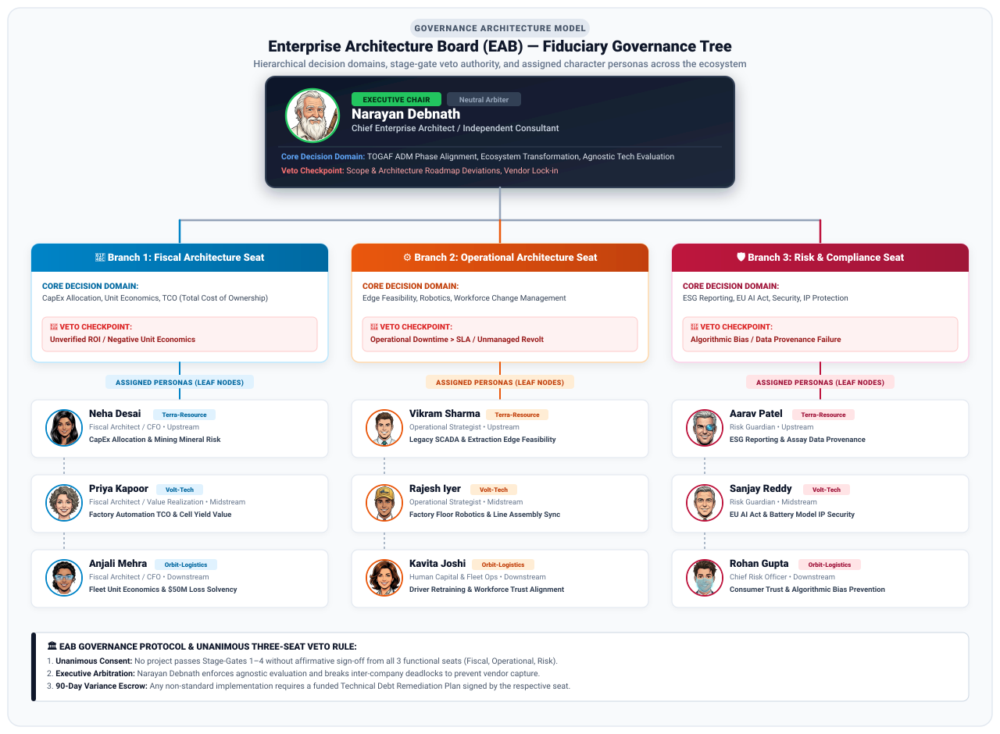
4. Authority, Stage-Gates & Architectural Veto
The EAB exercises binding stage-gate authority across four mandatory checkpoints in the TOGAF ADM lifecycle:
- Gate 1 (Vision & OKR Gate — Phase A): Validates business problem framing, ecosystem scope, and ratified Objectives & Key Results (OKRs) across Fiscal, Operational, and Risk domains before downstream architectural resources are committed.
- Gate 2 (Design Gate — Phases B, C, D): Audits Business, Data, and Technology architectures against Codified Principles and canonical schemas.
- Gate 3 (Production Readiness Gate — Phase G): Strict prerequisite for pilot-to-production cutover. Requires unanimous sign-off from Fiscal, Operational, and Risk seats.
- Gate 4 (Change & Evolution Gate — Phase H): Evaluates model retraining drift, retiring legacy pipelines, and architecture renewals.
5. Bounded Variance & Technical Debt Escrow
No project may bypass architectural standards without a formal, time-bounded Architecture Variance. Variances are granted for a maximum of 90 calendar days and require a mandatory Technical Debt Remediation Plan backed by a dedicated capital escrow fund.
Preliminary Phase — Section 4: Architecture Repository Setup & Classification Scheme
In accordance with the TOGAF standard and ISO/IEC/IEEE 42010 specifications[4], the preliminary setup of an enterprise architecture capability requires establishing the Architecture Repository. In our multi-enterprise ecosystem, the Architecture Repository is not merely a shared file server or passive document store; it is the central nervous system that maintains single-source-of-truth traceability, governs reusable building blocks, enforces architectural standards, and preserves immutable compliance audit trails across Terra-Resource, Volt-Tech, and Orbit-Logistics.
"Enterprise Architect Decision: The Architecture Repository Setup. The fastest way an enterprise AI initiative degenerates into chaos is when architectural artifacts are scattered across disparate wikis, Jira tickets, slide decks, and local spreadsheets."
"In the Preliminary Phase, we establish a structured, federated Architecture Repository with a formal classification scheme. This guarantees that every business capability, interface contract (Protobuf IDL), safety standard (ASIL-D), and Architecture Decision Record (ADR) is centrally discoverable, version-controlled, and immutably governed across our entire tripartite ecosystem."
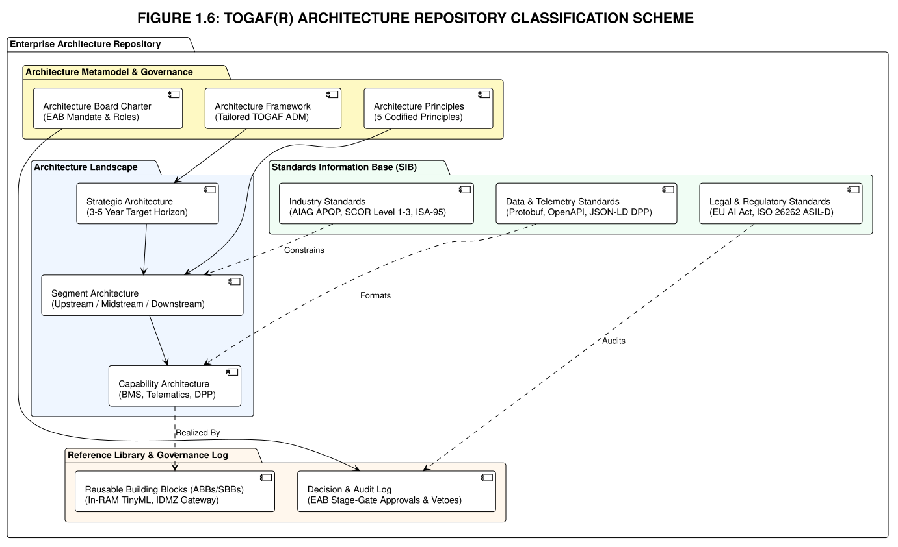
The 6 Core Components of the Ecosystem Architecture Repository
The Architecture Repository is organized into six strictly demarcated tiers to govern the transformation lifecycle:
1. Architecture Metamodel
Purpose: Standardizes vocabulary, entity schemas, and relationship taxonomy across the ecosystem.
- Defines formal entity classes: Business Drivers, Capabilities, Business Services, Architecture Building Blocks (ABBs), Solution Building Blocks (SBBs), Data Objects, Physical Hardware.
- Enforces bidirectional traceability from board-level fiduciary drivers down to embedded microcontroller registers.
2. Architecture Landscape
Purpose: Houses architectural models and blueprints across current, transition, and target states.
- Strategic Architecture: High-level view defining the end-to-end digital thread from extraction pit to customer route.
- Segment Architecture: Domain blueprints for Terra-Resource (Mining), Volt-Tech (OEM), and Orbit-Logistics (Fleet).
- Capability Architecture: Granular building blocks (INT8 TinyML runtime, MQTT message brokers, time-series lakehouse).
3. Reference Library
Purpose: Stores reusable reference models, architectural patterns, and accelerated implementation templates.
- Includes the composite TOGAF + AIAG + SCOR Hybrid Reference Model.
- Houses standard edge-to-cloud IoT patterns, battery state estimation algorithms, and ASIL-D lockstep MCU reference designs.
4. Standards Information Base (SIB)
Purpose: The authoritative set of technical, safety, data, and regulatory standards to which all solutions must conform.
- Automotive & Safety: ISO 26262 ASIL-D, AUTOSAR Classic/Adaptive.
- Data Serialization: Protocol Buffers v3, MQTT 5.0, OpenAPI 3.1.
- Regulatory Mandates: EU Battery Regulation (2023/1542), EU AI Act (2024/1689).
5. Governance Log
Purpose: An immutable, auditable historical record of all governance activities, decisions, and dispensations.
- Architecture Decision Records (ADRs): Formal records of technical choices, alternatives evaluated, and decision rationale.
- Architecture Dispensations: Time-bounded 90-day variances with escrow-funded technical debt remediation milestones.
- Change Request Register: Dynamic tracking of Architecture Change Requests (ACRs) raised during project lifecycles.
6. Architecture Capability
Purpose: Defines the organizational capability, governance charters, tools, and skills required to sustain enterprise architecture.
- EAB Operating Charters, review gate checklists, and stage-gate sign-off workflows.
- Federated multi-tenant repository access controls ensuring IP protection between partners.
Federated Ecosystem Repository Partitioning Model & Access Governance
Because the Smart Mobility Ecosystem spans three independent commercial entities, the repository employs a federated, multi-tenant partitioning scheme with strict access controls and mandatory audit trail retention:
| Repository Partition | Owner / Custodian | Governance Scope | Read Access | Write Access | Audit Trail Retention |
|---|---|---|---|---|---|
| Joint Standards Registry (Ecosystem Vault) | Cross-Enterprise EAB / Narayan Debnath | Shared Protobuf schemas, DPP data models, Mutual Depot Charging SLAs, API Contracts | Public-Read across Ecosystem | Joint Standards Council (JSC) ratified votes only | 3 Years (Minimum) / WORM Storage |
| Terra-Resource Sovereign Partition | Terra-Resource EARB / Neha Desai & Vikram Sharma | Spectroscopy calibration, extraction workflows, mining telemetry lakehouse | Terra-Resource engineering; EAB read-only audit | Terra-Resource EARB authorized leads | 3 Years / HSM-backed |
| Volt-Tech OEM Sovereign Partition | Volt-Tech EARB / Priya Kapoor & Sanjay Reddy | Proprietary BMS algorithms, TinyML weights, MCU firmware, factory MES | Volt-Tech engineering; EAB compliance review | Volt-Tech EARB with ASIL-D safety sign-off | 3 Years / HSM-backed |
| Orbit-Logistics Sovereign Partition | Orbit-Logistics EARB / Anjali Mehra & Rohan Gupta | Autonomous dispatch, depot grid management, routing, workforce rosters | Orbit-Logistics engineering & ops; EAB audit | Orbit-Logistics EARB authorized leads | 3 Years / HSM-backed |
Request for Architecture Work (RfAW) — Ecosystem Initiation Template
The formal culmination of the TOGAF® Preliminary Phase is the issuance of the Request for Architecture Work (RfAW). The RfAW serves as the official trigger from the enterprise executive board to commission the architecture capability for a targeted transformation cycle:
| Requesting Authority: | Orbit-Logistics Board of Directors / Joint Standards Council |
| Business Problem Statement: | $50M quarterly EBITDA loss bleed from autonomous delivery operations; systemic ghost telemetry & battery failures. |
| Target Capability Scope: | 10,000 Level-4 Autonomous Delivery Vehicles, 48 regional depot grids, multi-tier supply-chain telemetry ingestion. |
| Budget Parameters: | Tranche-gated capital structure (to be formalized in Statement of Architecture Work). |
| ADM Phases Commissioned: | Phase A (Architecture Vision) through Phase H (Architecture Change Management). |
| Executive Sponsors: | Anjali Mehra (CFO), Kavita Joshi (CPO), Rohan Gupta (CRO), Narayan Debnath (Chief EA). |
SoAW-ORBIT-2026-001 (Statement of Architecture Work) in Chapter 3 (Phase A — Architecture Vision).
📌 Phase Forward Handshake Nodes (Directives & Deliverables for Phase A)
The Preliminary Phase establishes the institutional foundation and formally hands over key deliverables and directives into Phase A: Architecture Vision:
- Governing Deliverable Handover: The formally signed Request for Architecture Work (RfAW-ORBIT-2026-001) transfers executive authorization, sponsor capital commitments, and multi-enterprise scope to Phase A.
- Stakeholder Engagement Mandate: Phase A must engage the power/interest quadrants established in the Stakeholder Engagement Matrix, ensuring joint sign-off across Terra-Resource (mining), Volt-Tech (OEM), and Orbit-Logistics (fleet operations).
- Baseline Metric Pass-Through: The SCOR baseline failure metrics (RL.1.1 91.2%, CO.1.1 $2.42/mi) are passed to Phase A as the non-negotiable threshold criteria for evaluating target AI architectures.
- Repository Partitioning Governance: The Federated Architecture Repository structure mandates that Phase A store all cross-enterprise artifacts in Partition 1 (Joint Consortium) while enforcing air-gapped isolation for proprietary intellectual property.

"The stage is set. The principles are codified, the board is chartered, the Architecture Repository is operational, and the maturity baseline is exposed. But downstream at Orbit-Logistics, disaster has struck. The autonomous fleet is bleeding $50 million a quarter, yet the dashboards report perfect operations. Join me in Chapter 2 inside the Global Command Center as we uncover the 'Ghost in the Machine'."
⚠️ When Architecture Decisions Fail: Companion Exception Case 1
What happens when Principle 1 ("Safety & Compliance are Non-Negotiable") is overridden under corporate delivery pressure? Explore the emergency case where Terra-Resource deployed an unvetted regex telemetry scrubber at the Northern Lithium Pit to hide thermal runaway spikes, destroying $18.4M in cathode lots, triggering an emergency EAB audit, and establishing Rule PRE-06 (Automated Sanction Enforcement).
Read Exception Governance Case 1: Telemetry Scrubber Principle Breach →Chapter 1 References & Fact-Check Verification Registry
This chapter's governance frameworks, fiduciary rules, and maturity scoring formulas are formally grounded under our 5-Tier Epistemic Taxonomy:
-
[1]
[STANDARD]
The Open Group (2022). The TOGAF® Standard, 10th Edition: Architecture Development Method (ADM) Preliminary Phase & Architecture Principles. Van Haren Publishing. Clauses 3.2 (Principles Formulation) & 3.3 (Stakeholder Engagement).
Fact-Check Verification: Codifies the four mandatory components of an enterprise principle (Name, Statement, Rationale, Implication) and requires stakeholder power-versus-interest profiling during Preliminary scoping.↩ back to text
-
[2]
[STATUTE]
Delaware General Corporation Law, 8 Del. C. § 141(a); In re Caremark International Inc. Derivative Litigation, 698 A.2d 959 (Del. Ch. 1996); Stone v. Ritter, 911 A.2d 362 (Del. 2006).
Fact-Check Verification: Establishes board members' non-delegable fiduciary duty of oversight: directors face personal liability if they fail to implement reporting and monitoring systems for mission-critical operations, directly applicable to black-box enterprise AI deployments.↩ back to text
-
[3]
[STANDARD]
Association for Supply Chain Management (ASCM) (2023). Supply Chain Operations Reference Digital Standard (SCOR-DS) Version 14.0. Chicago: ASCM.
Fact-Check Verification: Verifies Level-1 Strategic Performance Metrics: Reliability (RL.1.1 Order Fulfillment), Responsiveness (RS.1.1 Order Fulfillment Cycle Time), Agility (AG.1.1 Upside Supply Chain Flexibility), Cost (CO.1.1 Total Supply Chain Management Cost), and Asset Management (AM.1.1 Cash-to-Cash Cycle Time).↩ back to text
-
[4]
[STANDARD]
ISO/IEC/IEEE 42010:2022. Software, systems and enterprise — Architecture description. ISO/IEC/IEEE Joint Technical Committee.
Fact-Check Verification: Establishes international requirements for Architecture Repositories, Viewpoints, Decision Records (ADRs), and formal multi-stakeholder concerns governance.↩ back to text
-
[5]
[INDUSTRY]
CMMI Institute (2018). Capability Maturity Model Integration (CMMI®) Model Version 2.0. Carnegie Mellon Software Engineering Institute / ISACA.
Fact-Check Verification: The 5-level maturity progression (Level 1 Initial/Ad-hoc, Level 2 Managed/Pilots, Level 3 Defined/Ecosystem, Level 4 Quantitatively Managed/Closed-Loop, Level 5 Optimizing/Autonomous) adapts CMMI appraisal levels to AI engineering.↩ back to text
-
[6]
[SIMULATION]
Consortium Architecture Board Governance Specifications (Rules PRE-01 through PRE-04 & Composite Maturity Score Formulation).
Fact-Check Verification: Internal consortium policies and \(CMS = \frac{1}{5}\sum_{i=1}^5 D_i\) formula represent calibrated pedagogical instruments illustrating multi-enterprise governance stage-gates.↩ back to text